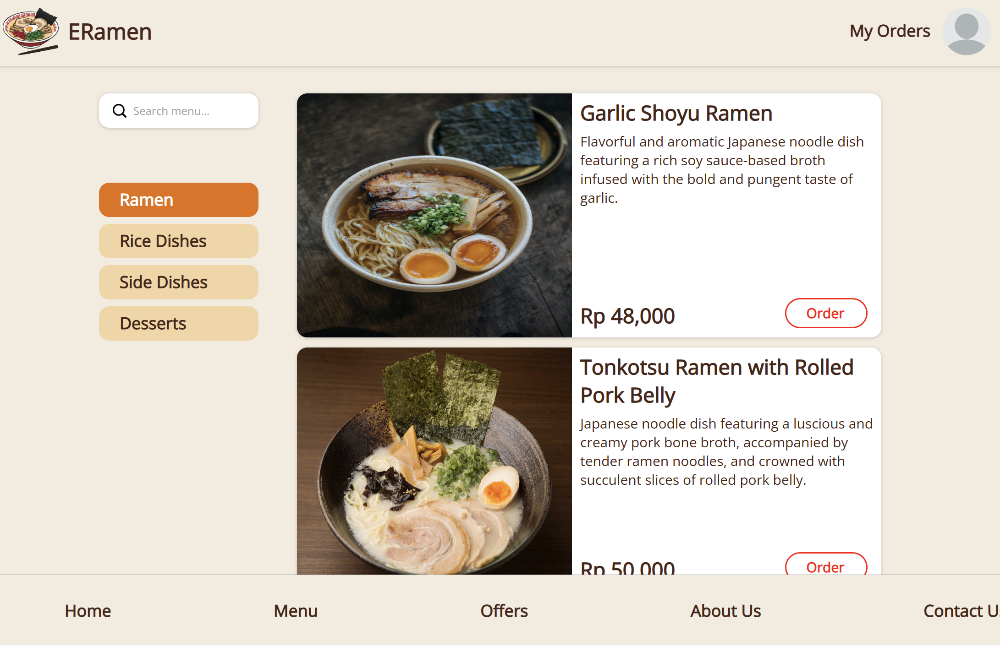

Edrick Louis
A Bit About Me
Hi, I'm a 5th-semester Computer Science student at Binus University with a specialization in Database Technology. I have an interest in Data Science and technology, and I've had the opportunity to explore these fields through some projects and research.
Come and see what projects I have
worked on →
Projects


Air Quality Analysis Based on City Population
Tech Stack :
Tableau, Python, and Pandas
This research project aims to explore the relationship between air quality and city population size by analyzing
air pollution data from cities worldwide. Air quality is measured using the Air Quality Index (AQI), which
indicates the level of pollution in the air and its potential health effects. The study categorizes cities into
five groups based on population size: small, medium, large, very large, and giant cities, providing insights into
how population density may influence air pollution levels.
A Comparative Analysis of BERT and RoBERTa Model for Sentiment Analysis on Twitter Text
Tech Stack :
Python, scikit-learn, TensorFlow, Transformers, NumPy, Pandas, Matplotlib, and Seaborn
NLP transformers are widely used in sentiment analysis tasks. In this research, we analyze
BERT and RoBERTa models in performing sentiment analysis. The purpose of this research is to know the pros and
cons of the both models and the best method possible to achieve the best results. This paper focuses more on
analyzing the effect of hyperparameter tuning (learning rate, epoch, and batch size) of both models in regards to
their accuracy and validation accuracy.
Evaluating the Impact of Latitude and Longitude on Air Quality Prediction: A Comparison Between Random Forest and Gradient Boosting Regressors
Tech Stack :
Python, scikit-learn, NumPy, Pandas, Matplotlib, and Seaborn
This research compares the effectiveness of Random Forest Regressor and Gradient Boosting Regressor models in
predicting Air Quality Index (AQI), focusing on the role of geographical factors like latitude and longitude as
predictive features. The study aims to determine the most accurate model for AQI prediction by evaluating performance
metrics such as Mean Squared Error (MSE) and R² score. Results highlight the predictive value of adding geographical
features, offering insights for improving AQI forecasting accuracy and model selection in environmental data analysis.
ERamen Front-End Website
Tech Stack :
HTML, CSS, JavaScript, and GitHub Pages
ERamen is a front-end-based marketplace website designed to sell various types of ramen online. Built using HTML and CSS,
the website has three main features: a Home page to promote featured ramen, a Menu page where users can view and select their
favorite ramen, and a Contact Us page that allows users to provide feedback or suggestions. The project focused on an
attractive and functional design to provide an intuitive user experience, while also training my skills in front-end-based
website development.

Certificates


Data Analysis with Python
Succesfully completed and received a passing grade in Data Analysis with Python. A course on cognitiveclass.ai, powered by IBM Developer Skills Network.
View Authenticity
SQL and Relational Databases 101
Succesfully completed and received a passing grade in SQL and Relational Databases 101. A course on cognitiveclass.ai, powered by IBM Developer Skills Network.
View Authenticity
Professional Office
Succesfully completed English C1.2-Level courses and received passing grade for Professional Office. A digital language learning system provided by Binus University.
Advanced English
Succesfully completed English C2.1-Level courses and received passing grade for Advanced English. A digital language learning system provided by Binus University.